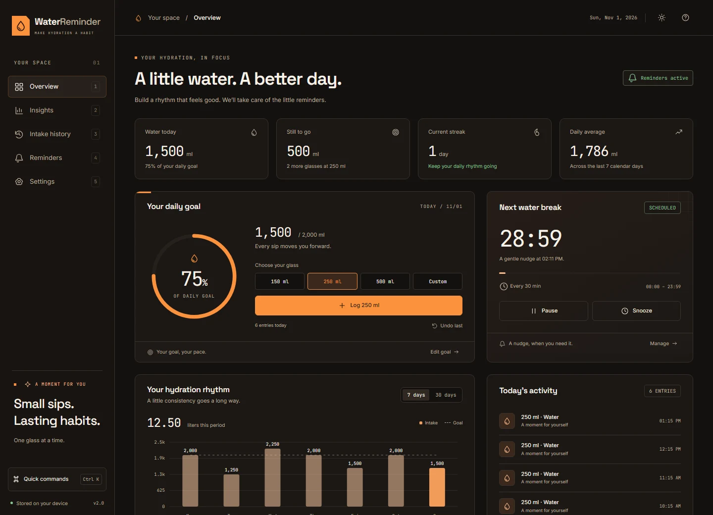
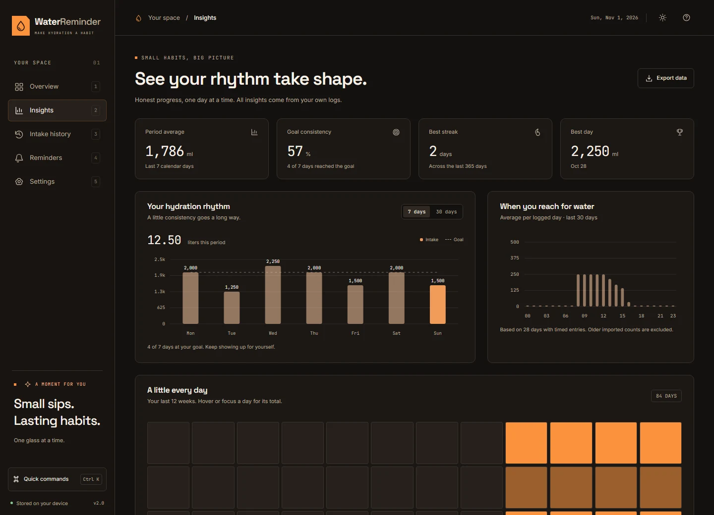
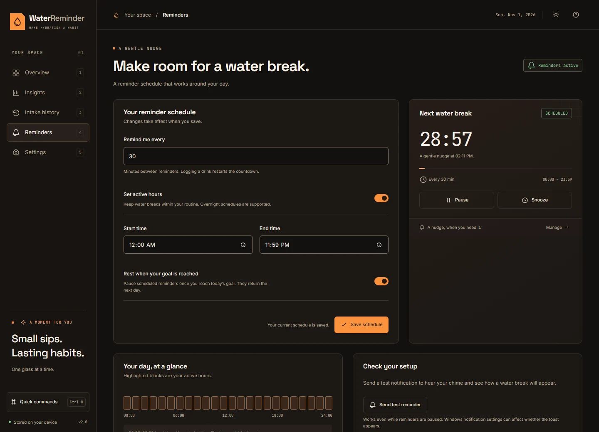
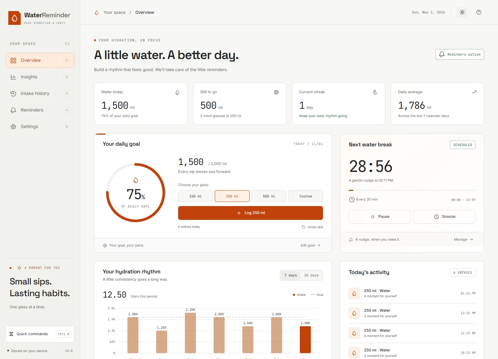

A nudge, not an interruption.
Set your interval and active hours. Snooze when you’re busy. Let reminders fit around your day.
YOUR NEXT WATER BREAKDEMO
29:59MIN
Deep in your work? We’ll remember the water.
Gentle reminders. Small sips. A healthier daily rhythm.
Free to useNo account neededWorks offline

You have enough to keep track of.
Let your desktop take care of the little reminders.
Set your interval and active hours. Snooze when you’re busy. Let reminders fit around your day.
Your own goal. Your favorite glass. Log a drink and turn a small moment into visible progress.
Weekly trends, personal streaks, and an activity calendar. A clearer picture of your daily rhythm.
Log a glass with D. Find anything with Ctrl K. Your next sip is a shortcut away.
No account. No cloud sync. Your history lives on your computer, with CSV and JSON exports when you need them.
Everything you need to find your rhythm. Nothing in the way.



Captured from Water Reminder v2.0 · Sample data shown
A quiet companion for people who lose track
of time doing what they love.
“One less thing to keep in my head when I’m deep in a project.”
“I like a little progress I can actually see. One glass at a time.”
“A simple reminder, a quick shortcut, and I’m right back in my flow.”
A preview of the testimonial section. These are illustrative quotes, not customer reviews.
A small app should be simple
to get to know.
Yes. The desktop app is free to use. There’s no subscription, sign-up, or account to create. Just download it and find your rhythm.
This download is the Windows desktop edition. Extract the entire ZIP, keep its files together, and open Water Reminder.exe. macOS and Linux downloads are not currently offered.
Yes. Closing the window keeps Water Reminder running in your system tray. Click the tray icon to reopen it, or choose Quit Water Reminder from its menu to stop the app. Windows notification and Focus Assist settings can affect notification delivery.
It stays on your computer. The desktop app works offline, uses no account, and stores your intake history locally. You can export your history as CSV or save a complete JSON backup in Settings.
Absolutely. Set a personal daily goal, choose your default glass size, switch between ml and US fl oz, and adjust reminder intervals and active hours. You can pause, snooze, or stop reminders once you reach your goal.
Yes. The desktop app and CLI share your intake history and preferences. The packaged Windows download opens the desktop app directly. Running the CLI from source additionally requires Node.js and the application source.
A little more water. A little more intention.
Make room for yourself, right on your desktop.
The Windows download will be available here when the release is published.